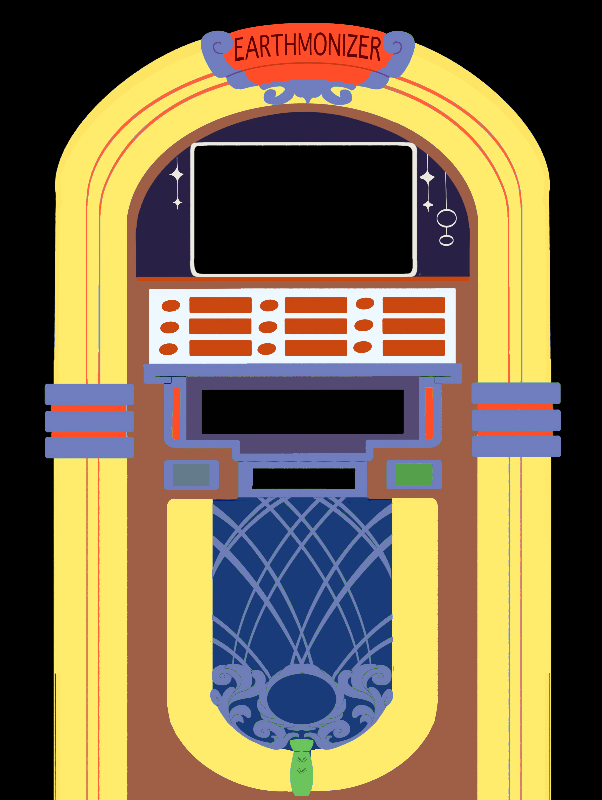

Earthmonizer: listen to our planet
Earthmonizer is an accessible digital app that turns Earth observation maps into sound. Choose Carbon Monoxide to explore satellite readings on a rotating globe: stronger readings make the rushing-air sound louder and brighter. Choose Aerosol to hear the map’s four components: red black carbon sounds metallic, pink dust sounds like wind, blue sea salt sounds like surf, and green sulfate sounds like a pulsing chemical tone. Choose Lightning to watch a yearly map video: yellow strike clusters trigger thunder, and larger clusters sound louder. Use Tab or Shift plus Tab to move through controls, and Enter or Space to activate one. Use the playback buttons and timeline to move through each dataset. When a map explorer is available, focus it and use the arrow keys to explore regions; press Enter for a summary. Press Escape to return to the jukebox and V to toggle the page voice. Each choice and sound filter has a screen-reader description.

Audio is playing. Press Tab to reach the zone, color, timeline and play controls, and the map explorer, where the arrow keys let you hear each region. Press Escape to return to the jukebox.
The map is split into 8 rows from north to south and 8 columns from west to east. Use the arrow keys to move one region at a time, starting near the center: each region plays its note and reads its value, where higher notes mean stronger readings. Home and End jump to the west and east edges. Press Enter for a summary of the current moment.
A dark globe turns slowly from Asia and Africa toward the Americas while a date counter runs from 14 January to 3 March 2020. Glowing orange patches mark carbon monoxide in the air. A dotted line sweeps the globe from north to south, and a yellow curve over it rises where the readings are stronger.
The carbon monoxide sonification uses a soft, airy rushing sound. Higher measured concentrations make the airflow louder and slightly brighter; quieter areas sound softer. This is a musical representation of satellite readings, not a recording of carbon monoxide.
Aerosol map from resources/aerosols.png. Use the color buttons to hear all aerosols together or isolate black carbon, dust, sea salt or sulfate. The scan beam, curve and sound nodes use the exact map color at each sampled point. Red black carbon is soot from incomplete combustion and sounds as a short, bright metallic clang. Pink dust is mineral material carried by wind and sounds as a low, soft gust with a particle-like hiss. Blue sea salt is salt aerosol from breaking waves and sounds as a slow swell of low filtered surf. Green sulfate forms from sulfur gases in the atmosphere and sounds as a pulsing, two-tone chemical fizz. Louder or higher notes indicate stronger map pixels. These are artistic sound representations, not recordings of the particles.
Plays all detected aerosol types together.
Black carbon is shown in red. It is soot from incomplete combustion and plays as a short, bright metallic clang.
Dust is shown in pink. It is mineral material carried by wind and plays as a low, soft gust with a particle-like hiss.
Sea salt is shown in blue. It is salt aerosol from breaking waves and plays as a slow swell of low filtered surf.
Sulfate is shown in green. It forms from sulfur gases in the atmosphere and plays as a pulsing, two-tone chemical fizz.
The lightning visualization plays the yearly lightning map video. The full image is scanned for yellow lightning points, not by a moving line. Translucent squares mark the active map cells; the readout gives the approximate latitude and longitude of the strongest cell. A new visible cluster triggers a sharp thunder crack followed by a low resonant note that hangs while the cluster remains visible. When the points fade, the note fades too. More points in a cluster make the thunder louder. This is a synthesized sound representation of the video.
Choose a record
Select a visualization to tune in. Audio begins with your selection and the player opens on top of the page. Carbon monoxide comes from satellite imagery; aerosols use the supplied composition map; lightning uses a yearly map video. The page reads itself aloud with its own voice; press V to turn it on or off.
Tune what you hear
Pick a strip of the map or a color range and the jukebox plays just that.
How it sounds: Choose CO, Aerosol or Lightning to hear how each map is turned into sound.